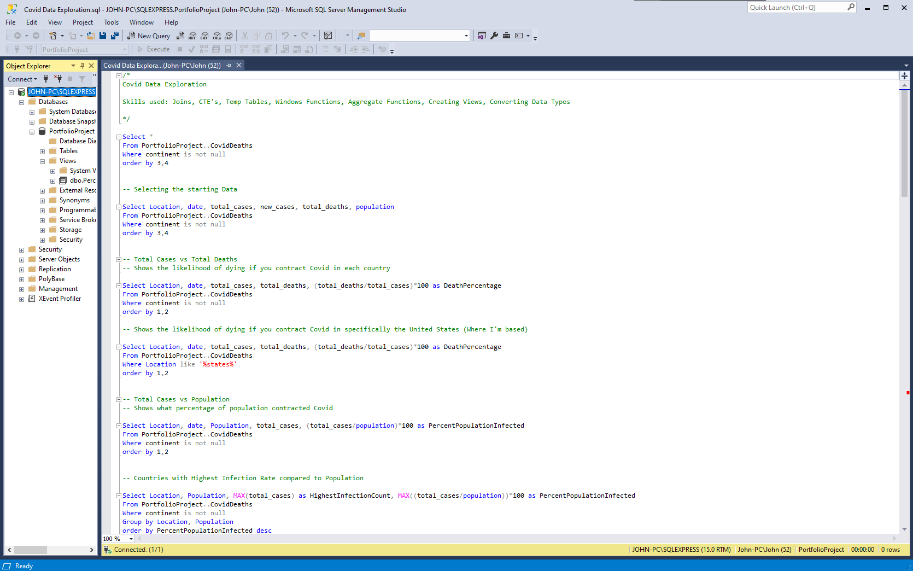

SQL + Tableau
This project started with a desire to learn and apply skills with primarily SQL and Tableau in mind. The data set was grabbed from a website called Our World in Data and it has a very robust and daily updated spreadsheet on World Covid-19 data.
The first steps were putting getting the data I wanted to work with from the excel sheet and then imported into the SQL database I made to get the process kickstarted. The first thing to notice is how much information is provided. Our World in Data has an extremely throughough look into the pandemic, but to start I wanted to focus on the number of deaths and vaccinations given. Once that was separated I imported it into SQL, using Microsoft's import tool in Microsoft SQL Management Studio.
Once I had the spreadsheet in the Management Studio I begain looking into what the data provided and selected the starting data that I wanted to work with, which ended up being the location, dates, total cases, new cases, total deaths, and the population. With this I had plenty to work with and began looking at the Total Cases vs Total deaths in each country represented as Death Percentage, showing likelihood of death after contracting Covid in each country. Keeping the order by country first and then date we can see how the Death Percentage changed overtime.
While these stats are extremely interesting, it's important to keep in mind that there are so many variables at play. When comparing, we need to consider different properties like the standard of living in each country, the common health/life expectancy, even looking at how different each person is that contracted the virus. The statistics that we can get from this data can lead to some cool insights but I'm going to keep in mind that this is defenitly not the whole picture.
Some of the more advanced techniques I started to work with were using temporary results for calculations. These help with more advanced Queries. In this example I used this to look at the total number of people vaccinated per day in a country. To accomplish this I summed each new vaccination partitioned by the location and the date. This way on any given day I'm able to see the total number of people vaccinated in that particular country. To demonstrate, I did this two ways, first with CTE (Common Table Expression) and then with Temporary Tables.
This project is far from complete, but I wanted to get the start of it down. In the near future I'm going to be doing more queries and then build a Tableau dashboard with it. Once that is done I'm going to update this page with the process, for now please checkout the project on GitHub for a better view with the button below: